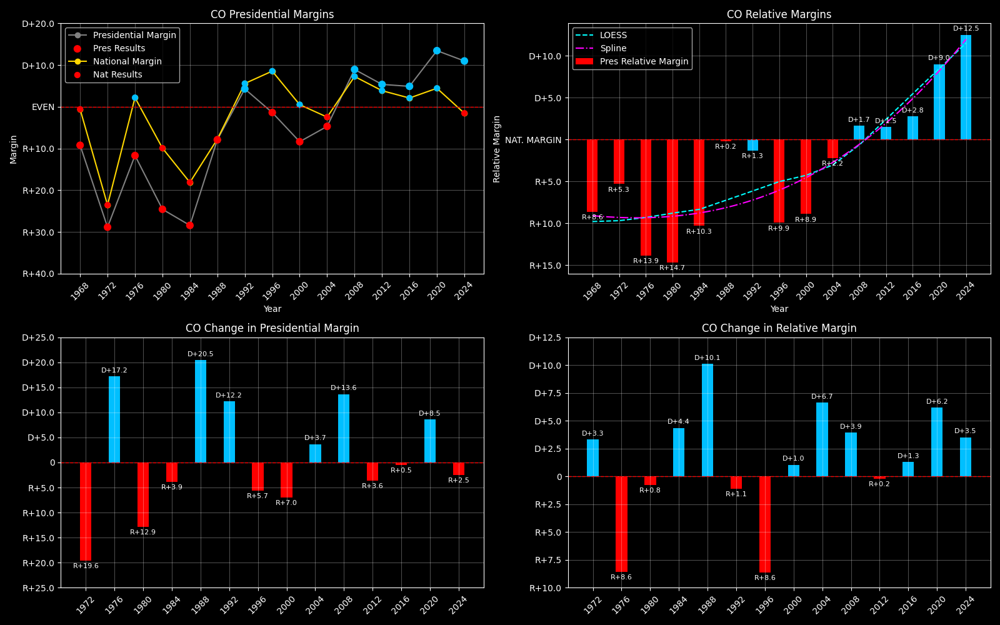

← Back to Map

Colorado (CO) statewide
Colorado (CO) — Data
| Year | EVs | D | R | Margin | Rel. Margin | Nat. Margin | 2-Party Margin | Margin Δ | Rel. Margin Δ | Nat. Margin Δ | 2-Party Margin Δ | Other votes | Total votes |
|---|
| 1968 | 6 | 335,174(41.6%) | 409,375(50.8%) | R+9.2 | R+8.6 | R+0.6 | R+10.0 | | | | | 60,813(7.6%) | 805,362 |
| 1972 | 7 | 330,071(35.6%) | 597,590(64.4%) | R+28.8 | R+5.3 | R+23.5 | R+28.8 | R+19.6 | D+3.3 | R+23.0 | -0.18872114204869064 | 0(0.0%) | 927,661 |
| 1976 | 7 | 454,419(44.2%) | 574,577(55.8%) | R+11.7 | R+13.9 | D+2.2 | R+11.7 | D+17.2 | R+8.6 | D+25.7 | 0.1716080533821577 | 0(0.0%) | 1,028,996 |
| 1980 | 7 | 365,888(32.0%) | 646,293(56.6%) | R+24.6 | R+14.7 | R+9.9 | R+27.7 | R+12.9 | R+0.8 | R+12.1 | -0.16025841472265392 | 129,943(11.4%) | 1,142,124 |
| 1984 | 8 | 444,564(35.8%) | 797,340(64.2%) | R+28.4 | R+10.3 | R+18.1 | R+28.4 | R+3.9 | D+4.4 | R+8.2 | -0.0070301121361225904 | 0(0.0%) | 1,241,904 |
| 1988 | 8 | 621,453(46.0%) | 728,177(54.0%) | R+7.9 | R+0.2 | R+7.7 | R+7.9 | D+20.5 | D+10.1 | D+10.4 | 0.20498411608821876 | 0(0.0%) | 1,349,630 |
| 1992 | 8 | 629,681(40.4%) | 562,850(36.1%) | D+4.3 | R+1.3 | D+5.6 | D+5.6 | D+12.2 | R+1.1 | D+13.3 | 0.13511779808644267 | 366,010(23.5%) | 1,558,541 |
| 1996 | 8 | 671,150(44.5%) | 691,846(45.9%) | R+1.4 | R+9.9 | D+8.6 | R+1.5 | R+5.7 | R+8.6 | D+3.0 | -0.07122550762215532 | 145,274(9.6%) | 1,508,270 |
| 2000 | 8 | 738,229(42.4%) | 883,753(50.8%) | R+8.4 | R+8.9 | D+0.5 | R+9.0 | R+7.0 | D+1.0 | R+8.0 | -0.07453566409051118 | 118,197(6.8%) | 1,740,179 |
| 2004 | 9 | 1,001,710(47.2%) | 1,101,157(51.9%) | R+4.7 | R+2.2 | R+2.5 | R+4.7 | D+3.7 | D+6.7 | R+3.0 | 0.0424287106508266 | 18,167(0.9%) | 2,121,034 |
| 2008 | 9 | 1,288,577(53.7%) | 1,073,591(44.7%) | D+9.0 | D+1.7 | D+7.3 | D+9.1 | D+13.6 | D+3.9 | D+9.7 | 0.13830330554097564 | 39,197(1.6%) | 2,401,365 |
| 2012 | 9 | 1,323,102(51.5%) | 1,185,243(46.1%) | D+5.4 | D+1.5 | D+3.9 | D+5.5 | R+3.6 | R+0.2 | R+3.4 | -0.036052011893111344 | 61,173(2.4%) | 2,569,518 |
| 2016 | 9 | 1,338,799(48.2%) | 1,202,384(43.3%) | D+4.9 | D+2.8 | D+2.1 | D+5.4 | R+0.5 | D+1.3 | R+1.8 | -0.0012784522709424762 | 238,863(8.6%) | 2,780,046 |
| 2020 | 9 | 1,806,939(55.4%) | 1,368,065(41.9%) | D+13.5 | D+9.0 | D+4.4 | D+13.8 | D+8.5 | D+6.2 | D+2.3 | 0.08454616657914932 | 86,442(2.7%) | 3,261,446 |
| 2024 | 10 | 1,728,159(54.1%) | 1,377,441(43.1%) | D+11.0 | D+12.5 | R+1.5 | D+11.3 | R+2.5 | D+3.5 | R+6.0 | -0.02529702272940168 | 87,145(2.7%) | 3,192,745 |
Column explanations
- Year
- Election year.
- EVs
- Number of electoral votes allocated to this state or unit.
- D
- Number of votes for the Democratic candidate (raw count(pct%)).
- R
- Number of votes for the Republican candidate (raw count(pct%)).
- Margin
- Margin between the two major-party candidates, including third-party votes ((D - R)/total).
- Rel. Margin
- The presidential margin relative to the national presidential margin (Margin - Nat. Margin).
- Nat. Margin
- The national presidential margin for that year, including third-party votes ((D_total - R_total)/total_votes).
- 2-Party Margin
- Margin between the two major-party candidates, ignoring third-party votes ((D - R)/(D + R)).
- Δ
- Change (delta) in the value from the previous election year. Blank if no data for previous year.
- Other votes
- Number of votes for third-party (other) candidates (raw count(pct%)).
- Total votes
- Total voter turnout or ballots cast (when provided).